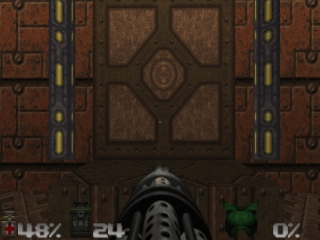
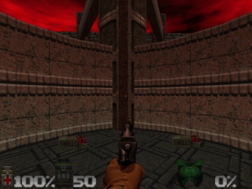
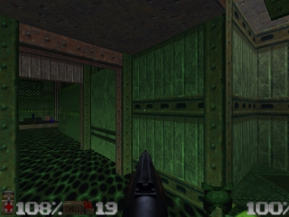
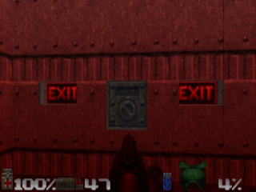

Doom
64 environment
Doors and switches
To open most doors and operate
swites, stand directly in front of them and press the Use button. When
you successfully operate a switch, it will change in some way (lights up,
flips a handle, etc).
If a switch does not change
after a coupole of tries, it is probably assigned to a task that has yet
to be accomplished, you already operated it, or it is not a switch. You'll
have toe xperiment. Some switches activate something out-of-view. Listen
closely, and use your automap to find it.
Hidden Doors
Some doors are hidden. Many
of these can be opened by finding a switch. In some cases you just need
to walk up to the wall and press Use button. Some are operated by special
tripwires or proximity detectors. If you've found a secret door, it will
often contain some much needed items, or prehaps something special.
There are clues that reveal
a secret door (Different colored lighting on the wall, a wall that is shifted
down, a flickering light on the wall, etc). Look closely. Demons don't
care about interior design.
Locked Doors

Some doors and switches
have security locks and require you to have a colorcoded (red, yellow,
or blue) security card or skull key to open them. Other locked doors are
operated by a nearby switch. Rather than walking up to the door, you'll
need to operate the switch. Beware, picking up a key sometimes get the
attention of many monsters.
Platforms &
Elevators

Often, you'll see platforms
that raise and lower. Some platforms operate continuously, while others
must be activated. Some of them are proximity activate, while other have
a nearby switch. Those without a switch can sometimes be operated by walking
up to the platform and pressing the Use button.
Teleporters
As the Demons mutate their
surrounding environment, they installed Teleporters for instant transporation.
To use a teleporter, just walk over the field to activate it.
Dangerous Hazards
Some parts of the environment
can more dangerous than the monsters you'll face. Areas containing radioactive
waste or crushing ceilings should be approached with caution.
Slime &
Other Radioactive Waste

Many of the areas contain
pools of dangerous liquis that will damage you if you walk through them.
There are several varieties of waste, each doing variable amounts of damage.
Loof for radioactive protection and other objects that may help you. If
it looks fluid, beware!
Crushing Ceilings
Some ceilnigs can smash
you, making you cry blood. Often, you'll be able to see the ceiling moving
before you go under, but not always. Be careful, this is no slide on ice!
Barrels
Drums containing fuel and
other violatile substances can be found scatter about. If fired at, barrels
creating a body blasting explosion. Fire at these near enemies and watch
them go BOOM! Be careful thought, don't get too close tot he blast because
it could take YOU out too.
Completing
an Area

Within each level, there
is an Exit area marked by an "EXIT" sign.
When you exit a level, an
Achievement Screen tallies your performance - ratio of kills, percentage
of items collected, amount of secrets found, and your completion time.
Eternal Life
after Death
If you die(By the way, better
luck next time!), you restart he level at the beginning with just your
pistol and 50 bullets. It's a shame to lose all the weaponry you've collected,
but you can't take that stuff with you when you die. That's just the way
it works.
Monsters you you killed before
are back again, just like you. Yeah, sucks, doesn't it?